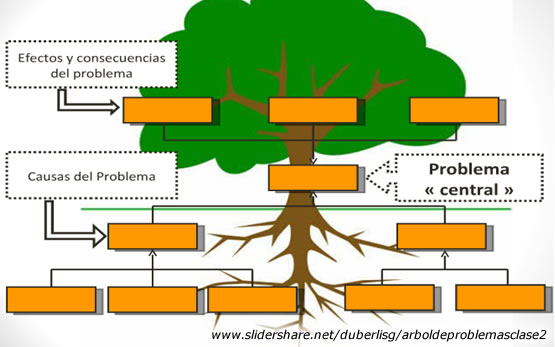

L'Arbre de Problemes
Eina metodològica d'enginyeria per identificar el problema central, les causes arrel i els efectes col·laterals.
💡 L'Arbre de Problemes en 3 idees visuals:
Per entendre bé una situació difícil abans de construir res, els enginyers ens imaginem un arbre:
- 🌱 Les Arrels (Causes - Sota terra): Per què passa? (Muntanyes altes que bloquegen les ones, falta d'electricitat als cims, cap operador comercial hi inverteix).
- 🪵 El Tronc (El Problema Central): Què falla exactament? (Pocona està aïllada i l'ambulatori no té comunicació per emergències).
- 🍃 Les Branques (Efectes - A dalt): Quines conseqüències té? (Retards perillosos en trasllats mèdics, aïllament escolar i joves que han d'emigrar).
La Metodologia de l'Arbre de Problemes
Un Arbre de Problemes és una tècnica de pensament crític i sistèmic imprescindible en qualsevol projecte d'enginyeria social. Ens ajuda a evitar un error molt comú: confondre un símptoma superficial amb la causa real.
És la carència o situació negativa nuclear que volem solucionar. Ha de ser una frase clara i mesurable (ex. «Aïllament en telecomunicacions i manca de comunicació sanitària a les comunitats rurals de Pocona»).
Per què passa això? Relleu abrupte que actua de pantalla, manca d'alimentació elèctrica de xarxa als cims, manca d'inversió comercial per baixa densitat de població.
Què passa si no ho solucionem? Retards mortals en el trasllat d'emergències mèdiques, aïllament escolar, emigració forçosa de la joventut cap a la ciutat.

Estructura lògica de l'Arbre de Problemes: Arrels (Causes) → Tronc (Problema) → Branques (Efectes). Fes clic per ampliar.
Joc Interactiu: Entrenament de l'Arbre de Problemes
Posa a prova la teva capacitat d'anàlisi sistèmica amb dos reptes reals de cooperació al desenvolupament. Arrossega (o fes clic) per col·locar cadascuna de les 5 fitxes a la seva posició de l'arbre: les Branques (Efectes i Conseqüències), el Tronc (Problema Central) i les Arrels (Causes Reals):